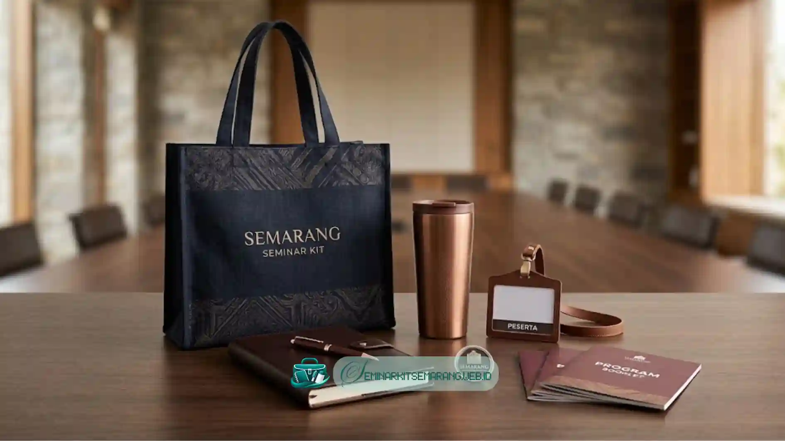

Apa Kriteria Utama Vendor Seminar Kit yang Baik
Kriteria utama vendor Seminar Kit Semarang yang baik meliputi pengalaman menangani
berbagai jenis acara, kualitas bahan yang konsisten, dan kemampuan memenuhi tenggat
waktu produksi sesuai jadwal acara.
Pengalaman vendor dapat dilihat dari jenis acara yang pernah ditangani, apakah mencakup seminar
pemerintahan, korporat, atau kampus. Vendor dengan pengalaman beragam umumnya lebih
memahami kebutuhan spesifik setiap jenis acara.
Pengalaman yang beragam juga memungkinkan vendor memahami standar dokumen dan protokol yang berbeda
pada acara instansi tertentu. Kualitas bahan menjadi indikator penting karena memengaruhi
kesan peserta terhadap acara secara keseluruhan.
Bahan tas seminar yang mudah rusak atau hasil cetak logo yang pudar
dapat menurunkan citra profesional penyelenggara. Vendor yang baik biasanya transparan
mengenai jenis bahan yang digunakan.
Selain itu, vendor yang terpercaya akan menyediakan beberapa pilihan tingkat kualitas bahan,
mulai dari bahan ekonomis hingga premium. Hal ini memudahkan panitia untuk memilih material
sesuai dengan anggaran yang telah ditetapkan.
Bagaimana Cara Mengecek Kualitas Vendor Sebelum Memesan
Cara mengecek kualitas vendor sebelum memesan adalah dengan meminta sampel produk fisik,
melihat portofolio hasil kerja sebelumnya, dan membaca ulasan dari klien yang pernah
menggunakan jasa vendor tersebut.
Meminta sampel produk merupakan langkah paling efektif sebelum melakukan pemesanan dalam
jumlah besar untuk acara penting Anda. Sampel memungkinkan panitia menilai langsung kualitas
jahitan tas, hasil cetak logo, dan bahan alat tulis.

Melihat portofolio berupa foto atau dokumentasi acara sebelumnya juga membantu menilai
konsistensi kualitas vendor dari waktu ke waktu. Selain itu, ulasan atau testimoni dari
klien sebelumnya dapat memberikan gambaran yang lebih obyektif.
Testimoni ini penting untuk mengetahui tingkat ketepatan waktu pengiriman dan respons
layanan pelanggan vendor tersebut saat mengatasi kendala. Sebagai tambahan, komunikasi
awal dengan vendor juga dapat menjadi indikator kinerja mereka.
Vendor yang responsif dan memberikan penjelasan detail mengenai proses produksi umumnya lebih
dapat diandalkan dibandingkan vendor yang lambat merespons pertanyaan. Oleh karena itu, jangan ragu
untuk melakukan diskusi mendalam dengan calon vendor.
Baca Juga
Tren Tumbler Custom di Tahun 2026Apa Saja yang Perlu Ditanyakan Kepada Vendor Sebelum Deal
Hal yang perlu ditanyakan kepada vendor sebelum deal meliputi estimasi waktu produksi,
kebijakan revisi desain, sistem pembayaran, dan opsi penggantian jika terjadi cacat
produksi pada barang yang dipesan.
Beberapa pertanyaan penting yang sebaiknya diajukan kepada vendor sebelum melakukan pemesanan
paket seminar kit untuk kelancaran acara Anda:
- Berapa lama estimasi waktu produksi untuk jumlah pesanan tertentu?
- Apakah tersedia revisi desain sebelum produksi massal dilakukan?
- Bagaimana sistem pembayaran, termasuk ketentuan uang muka dan pelunasan?
- Apakah ada kebijakan penggantian produk jika ditemukan cacat produksi?
- Bagaimana metode pengiriman dan apakah termasuk biaya tambahan?
Menanyakan hal-hal ini di awal dapat mengurangi risiko kesalahpahaman dan memastikan proses
kerja sama berjalan lancar hingga hari pelaksanaan acara. Memilih vendor seminar kit
Semarang yang tepat memerlukan proses evaluasi yang cermat.
Evaluasi ini dimulai dari pengecekan portofolio, permintaan sampel produk, hingga kejelasan
sistem pembayaran. Panitia disarankan melakukan komunikasi awal yang detail dengan calon vendor
agar tidak terjadi penyesalan di kemudian hari.
Anda juga tidak perlu ragu untuk membandingkan beberapa vendor sebelum membuat keputusan akhir.
Pilihlah vendor yang paling kooperatif dan dapat memenuhi tenggat waktu serta spesifikasi
yang telah disepakati bersama.